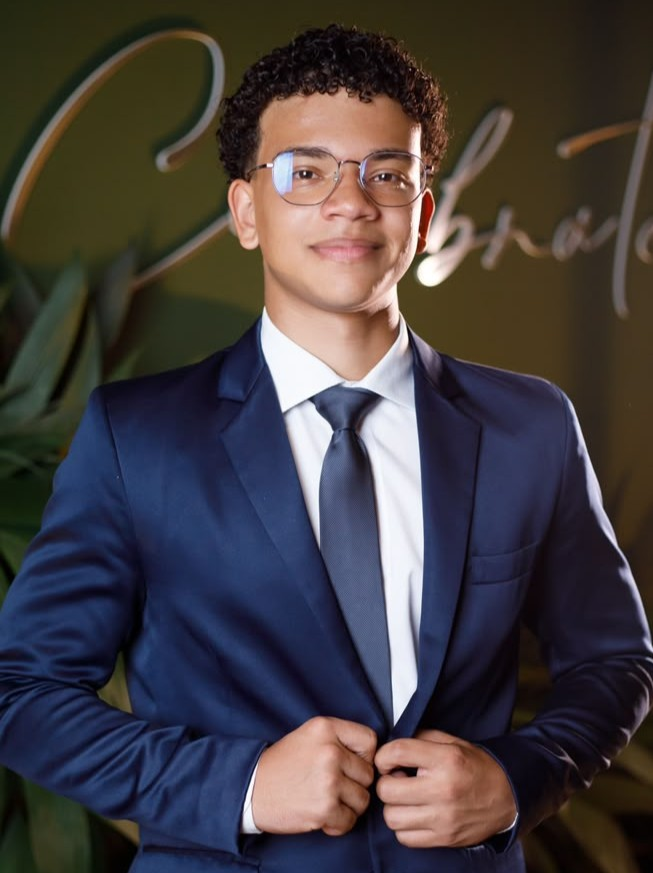

Solteiro, 19 anos
Rua Caiçaras 1084, Alvorada
Patos de Minas
E-mail: thalysmorales7@gmail.com
LinkdIn: linkedin.com/in/thalysmorales
Celular:(34)991508682
Busco uma oportunidade de estágio na área de Tecnologia da Informação para aplicar meus conhecimentos em programação, desenvolver novas habilidades técnicas e contribuir com os projetos da empresa, com responsabilidade e vontade de aprender.
Estudante de Sistemas de Informação, com conhecimentos em lógica de programação, Python e desenvolvimento web com HTML e CSS, adquiridos em projetos acadêmicos. Tenho facilidade para aprender novas tecnologias, organização na resolução de problemas e interesse em evoluir na área de desenvolvimento. Sou comprometido, gosto de trabalhar em equipe e busco crescer profissionalmente.